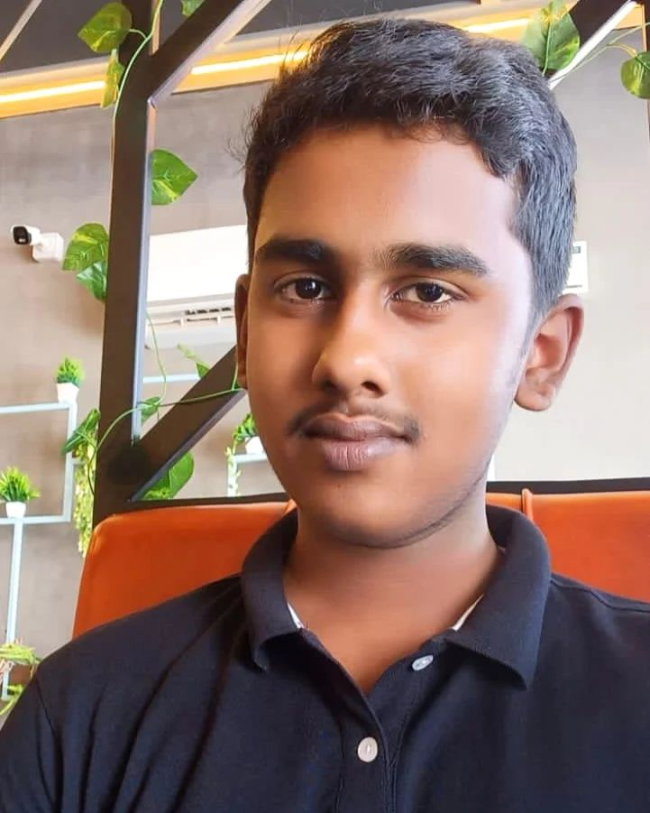

 ABOUT ME: Hello and welcome! My name is Jeevan Varma R. I., and I am delighted to share a bit about my
journey, ambitions, and aspirations. I am currently a first-year student pursuing aBachelor of
Science in Computer Science with a specialization in Artificial Intelligence and Data Science (AI & DS).
My academic journey began at Bharathi Metric Higher Secondary School, Vijayamangalam, where I completed
my schooling. My education there provided me with a strong foundation in critical thinking and problem
-solving, preparing me for the challenges of higher education.
I reside in Perundurai, a serene town in Tamil Nadu, which I proudly call home. However, my roots lie
in Kerala, a place deeply connected to my identity and values. Growing up in these culturally rich and
diverse environments has shaped my outlook on life, instilling in me the importance of balance, hard work,
and continuous self-improvement.
When I am not immersed in academics, I dedicate my time to pursuing my hobbies, which are more than just activities
they are a part of who I am. I have a deep passion for playing cricket, a sport that teaches me the value of teamwork
,discipline, and perseverance. Additionally, I enjoy video editing, which allows me to combine creativity with technical
skills, transforming simple visuals into compelling narratives. It’s a field where I continuously explore new techniques,
and I am currently venturing into the world of VFX, learning the art of creating stunning visual effects.
SKILLS AND STRENGTHS Over the years, I have cultivated a diverse set of skills that reflect my academic background, personal interests, and
commitment to self-growth. These include:
Analytical Thinking and Problem Solving: I excel at analyzing situations, breaking down problems into manageable
parts, and developing effective solutions. This skill is essential in my studies and projects.
Fast Learner: I have a strong ability to grasp new concepts and technologies quickly, enabling me to stay up-to-date
in a fast-paced field like Artificial Intelligence.
Technical Knowledge: My education has provided me with a solid understanding of computer science fundamentals, algorithms,
and problem-solving techniques.
Creative Skills:I am proficient in video editing, a skill that not only fuels my creativity but also enhances my storytelling
abilities. As a beginner in VFX, I am excited to expand my expertise in this field.
Team Collaboration: While I am naturally introspective, I thrive in team settings, contributing ideas and working
collaboratively to achieve shared goals.
WHO IAM I?
would describe myself as a focused and introspective individual with a strong passion for learning and creativity. While
I consider myself an introvert, I step out of my comfort zone when it comes to professional responsibilities, team collaborations,
or presenting ideas.>
One of my key strengths is my determination. Once I set a goal, I commit myself wholeheartedly to achieving it, ensuring that I
complete tasks with precision and dedication. I also pride myself on my ability to innovate—turning challenges into opportunities
and finding unique solutions to problems. Kindness is another defining trait of mine, which I view as both a strength and a learning point. While it drives me to approach situations with
empathy and compassion, I also strive to strike a balance between supporting others and prioritizing my goals. MY AIMBITION
I have always believed that learning is a lifelong journey, and I am committed to embracing every opportunity to grow and improve. My short-term goal
is to complete my BSc in Computer Science (AI & DS) successfully while mastering new skills that align with my passion for technology and creativity.
Looking ahead, I aspire to carve a niche for myself in the world of technology, particularly in fields like Artificial Intelligence, Data Science, and
Digital Creativity. My dream is to leverage my knowledge and skills to develop innovative solutions that address real-world problems, making a positive
impact on society. One of my long-term goals is to combine my technical expertise with my creative interests, exploring opportunities in areas like AI-driven content creation,
advanced VFX design, and developing tools that enhance productivity in the creative and technological sectors. I firmly believe that every challenge presents an opportunity to grow, and I am eager to take on projects, internships, and collaborations that allow me to learn,
innovate, and contribute meaningfully to the world around me. My personal note
As someone who values both academic and personal growth, I take pride in balancing my professional aspirations with my personal interests. My journey has been
shaped by a relentless curiosity to explore new areas of knowledge and a commitment to pushing the boundaries of my potential.
Thank you for taking the time to get to know me. I am always eager to connect with individuals who share a passion for learning, creativity, and innovation.
Let’s collaborate, share ideas, and make meaningful contributions together!